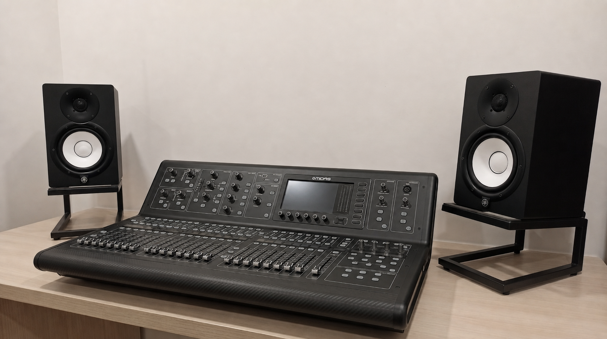
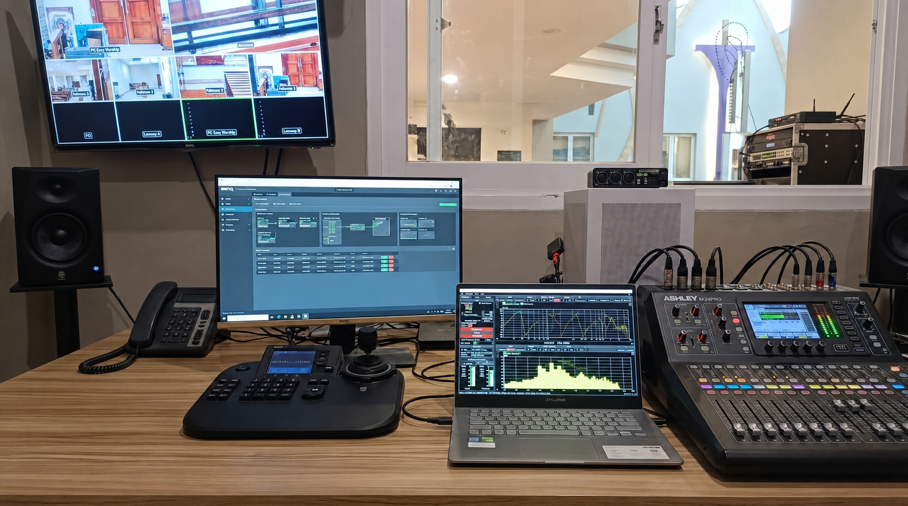

Suara yang jernih dan enak didengar berawal dari penempatan alat yang pas. Kami siap membantu perancangan dan pemasangan sound system untuk cafe, restoran, ruang meeting, hingga tempat ibadah. Kami pastikan suara tersebar merata di setiap sudut ruangan dengan hasil akhir pemasangan yang rapi dan bersih.

Suara sound system mendem, pecah, atau sering bikin kaget karena storing? Masalahnya belum tentu pada alatnya, melainkan pada pengaturannya. Kami bantu memaksimalkan potensi perangkat audio Anda—baik alat standar maupun premium—dengan menyeimbangkan frekuensi agar suaranya jernih dan nyaman didengar untuk cafe, restoran, ruang rapat, hingga tempat ibadah.

Jangan biarkan momen penting Anda terganggu karena mic tiba-tiba mati atau suara musik pecah. Kami menyediakan Soundman profesional yang akan standby di lokasi untuk mengontrol, menjaga, dan memastikan kualitas audio tetap prima dari awal hingga acara selesai.